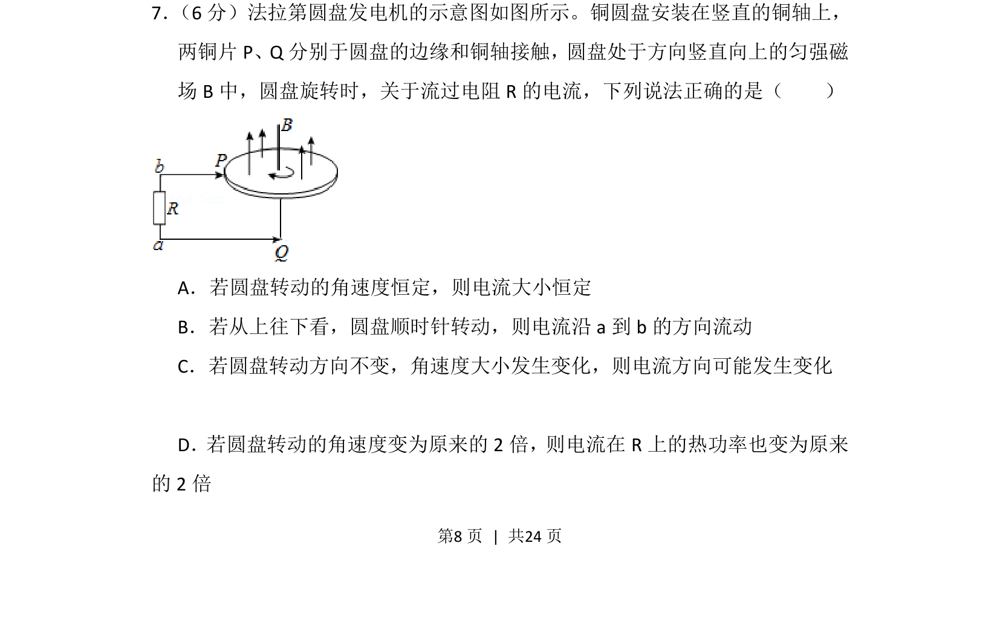
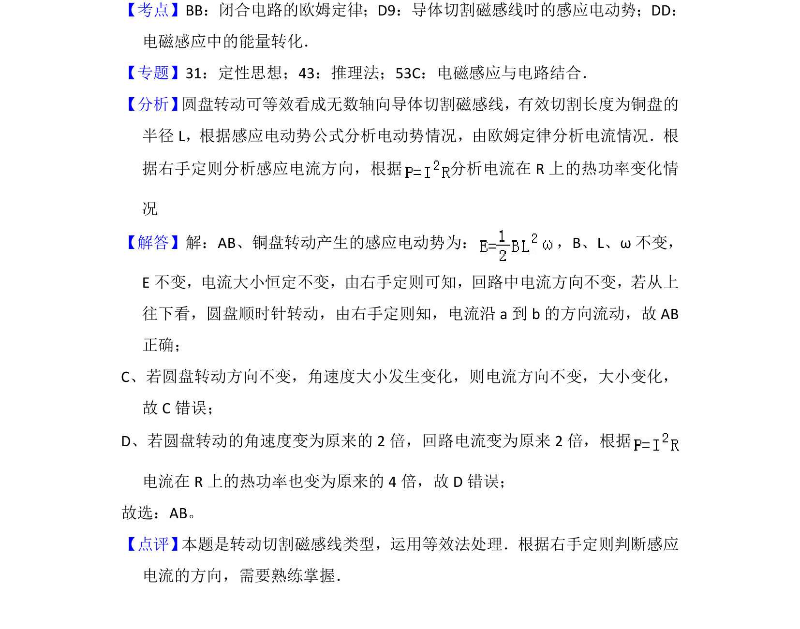

2016-新课标Ⅱ-07
考点：法拉第电磁感应定律 右手定则 电功率
题面


摘要
考查法拉第圆盘发电机模型，分析感应电流大小、方向及热功率与角速度的关系
关联考点
答案与解析

📄 原 PDF 第 8 页：
素材/真题/吉林/2008-2024·（吉林）物理高考真题/2016年高考物理试卷（新课标Ⅱ）（解析卷）.pdf
题干文本
7． （6分）法拉第圆盘发电机的示意图如图所示。铜圆盘安装在竖直的铜轴上， 两铜片P、Q分别于圆盘的边缘和铜轴接触，圆盘处于方向竖直向上的匀强磁 场B中，圆盘旋转时，关于流过电阻R的电流，下列说法正确的是（ ） A．若圆盘转动的角速度恒定，则电流大小恒定 B．若从上往下看，圆盘顺时针转动，则电流沿a到b的方向流动 C．若圆盘转动方向不变，角速度大小发生变化，则电流方向可能发生变化 D．若圆盘转动的角速度变为原来的2倍，则电流在R上的热功率也变为原来 的2倍